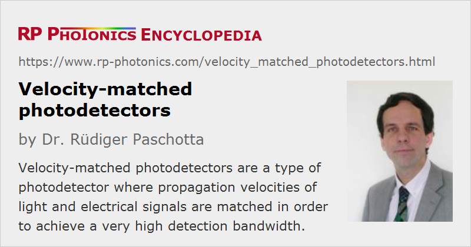

Velocity-matched Photodetectors
Definition: a type of photodetector where propagation velocities of light and electrical signals are matched in order to achieve a very high detection bandwidth
Alternative term: traveling-wave photodetectors
How to cite the article; suggest additional literature
Author: Dr. Rüdiger Paschotta
Velocity-matched photodetectors (or traveling-wave photodetectors) are devices which allow the detection of light with the favorable combination of very high bandwidth (tens of gigahertz) and very high photocurrents (tens of milliamperes). For conventional photodiodes, there is a trade-off between bandwidth and photocurrent. In velocity-matched photodetectors, this trade-off is eliminated by combining several small-area photodetectors, which are weakly coupled to an optical waveguide (so that each one absorbs only a part of the optical power) and deliver their photocurrents into a common RF waveguide structure. The propagation velocities of the optical and electrical signals are matched to each other so as to maximize the device bandwidth.
Such devices are useful for microwave optics, e.g. for optoelectronic generation of microwaves or for microwave fiber-optic links.
Questions and Comments from Users
Here you can submit questions and comments. As far as they get accepted by the author, they will appear above this paragraph together with the author’s answer. The author will decide on acceptance based on certain criteria. Essentially, the issue must be of sufficiently broad interest.
Please do not enter personal data here; we would otherwise delete it soon. (See also our privacy declaration.) If you wish to receive personal feedback or consultancy from the author, please contact him e.g. via e-mail.
By submitting the information, you give your consent to the potential publication of your inputs on our website according to our rules. (If you later retract your consent, we will delete those inputs.) As your inputs are first reviewed by the author, they may be published with some delay.
Bibliography
| [1] | K. S. Giboney et al., “Traveling-wave photodetectors”, IEEE Photon. Technol. Lett. 4 (12), 1363 (1992), doi:10.1109/68.180577 |
| [2] | L. Y. Lin et al., “Velocity-matched distributed photodetectors with high saturation power and large bandwidth”, IEEE Photon. Technol. Lett. 8 (10), 1376 (1996), doi:10.1109/DRC.1996.546434 |
See also: photodetectors, photodiodes
and other articles in the category photonic devices
|  |
If you like this page, please share the link with your friends and colleagues, e.g. via social media:
These sharing buttons are implemented in a privacy-friendly way!